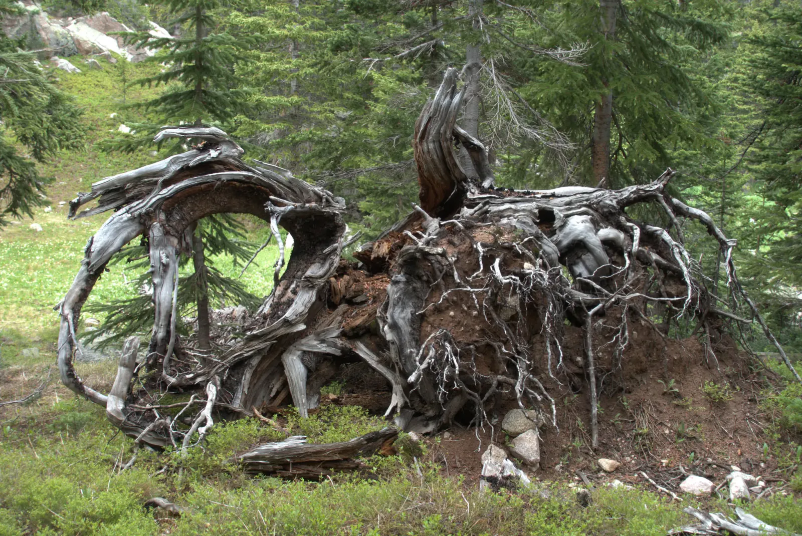

Jagged Peace
Nobody told the snow it was July. I spent the Fourth of July weekend backpacking into the Eagles Nest Wilderness above Silverthorne, and the Gore Range still had winter tucked into every gully. The first day was all approach along Rock Creek: willow flats with the creek winding through them, then ponds thick with lily pads and backed by gray ranks of standing dead trees, probably beetle-killed. Every so often the treetops parted and the jagged crest showed itself, a little closer each time. By afternoon the clouds were stacking up over the ridge, which is just how July works in Colorado. Thunderstorms are routine this time of year, so you better be off the high ground by noon.
On the second day the Willow Lake Trail climbed beside a creek, and there was water everywhere. Snowmelt tumbled down boulder staircases, and a tea-colored pool sat next to a pale granite slab. A columbine, Colorado's state flower, bloomed straight out of the rock. The dog, in a bright red pack of its own, decided by late morning that it had earned a roll in the undergrowth! Then the trees gave way and the Willow Lakes basin opened up: dark water under a crest of pinnacles, snow lingering on its flanks, and clouds doubled in a surface so still it was hard to say which way was up.

I made camp among the spruce at Salmon Lake, and the evening light took over from there. The water turned cobalt, and the crags above a cascade caught the gold of the late sun. No fireworks required. I fell asleep beneath mountains that ice spent ages shaping, and found the scale oddly comforting. On the Fourth I hiked back out.